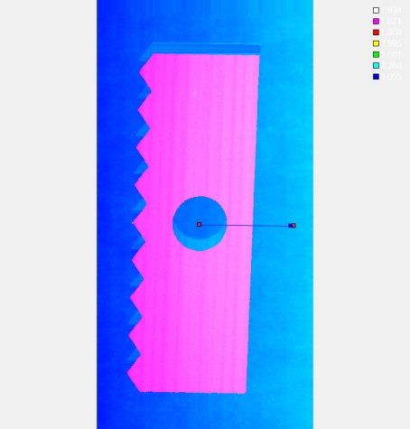
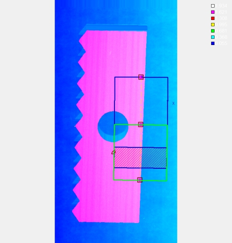

在3D测量中，截面生成工具主要是获取深度数据图像中，在XY平面上沿某个方向的轮廓数据，以降低该方向上的测量难度，提高其测量精度，以达到应用需求标准。
 
| 参数名称 | 参数描述 |
|---|---|
| 输入深度图像 | 输入待检测的深度图像。 |
| 二维线性变换 | 目标相对于模板的平移、旋转、缩放变换。 |
| 参数名称 | 参数描述 |
|---|---|
| 连续模式 | 选择“否”时，截取单一轮廓；选择“是”时，根据相邻截面间隔，截取多条轮廓。 |
| 向量交互ROI | 连续模式选择“否”时生效。用于指定截面的方向、大小。 |
| 手动设置点距 | 连续模式选择“否”时生效。选择“是”，显示点距参数，设置自定义点距作为X方向分辨率。 |
| 点距 | 连续模式选择“否”时生效。用户设置自定义点距作为X方向分辨率，取值范围[0.0001,1]，单位：毫米。 |
| 轮廓提取区域宽度 | 连续轮廓ROI内部截取轮廓时，分为N个轮廓提取区域，每个轮廓数据提取区域生成一个截面，参数是设置轮廓数据提取区域的宽度，取值范围1~10000，且(宽度+间距)>=1，单位：像素。 |
| 轮廓提取区域间距 | 连续轮廓ROI内部截取轮廓时，分为N个轮廓提取区域，每个轮廓提取区域生成一个截面，参数是设置相邻卡尺中心之间的距离，取值范围0~10000，且(宽度+间距)>=1，单位：像素。 |
| 反向生成 | 连续模式选择“是”时生效。正向方向为GUI中小箭头方向，该参数为“是”，则按照相反的方向生成截面轮廓。 |
| GUI宽度一致 | 连续模式选择“是”时生效。选择“是”时，GUI宽度同步变化；选择“否”时，各段GUI可设置不同宽度。 |
| 参数名称 | 参数描述 |
|---|---|
| 输出轮廓数据 | 输出深度图像沿向量方向的采样数据，即轮廓数据，包括轮廓点数，有效点数。 |
| 输出轮廓数组 | 连续模式选择“是”时生效。输出多条轮廓数据。此时输出轮廓数据和图像显示为轮廓数组的中间数据。 |
| 向量ROI | 连续模式选择“否”时生效，数值上与属性参数向量交互ROI一致。 |
| 向量ROI组 | 连续模式选择“是”时生效，可变折线ROI上各个卡尺线段的集合。 |
| 参数名称 | 参数描述 |
|---|---|
| 输出轮廓数据 | 输出深度图像沿向量方向的采样数据，即轮廓数据，包括轮廓点数，有效点数。 |
| 输出轮廓数组 | 连续模式选择“是”时生效。输出多条轮廓数据。此时输出轮廓数据和图像显示为轮廓数组的中间数据。 |
| 向量ROI | 连续模式选择“否”时生效，数值上与属性参数向量交互ROI一致。 |
| 向量ROI组 | 连续模式选择“是”时生效，多折线ROI上各个卡尺线段的集合。 |
| 执行结果 | 工具执行结果 |
| 执行时间 | 工具执行时间 |
截面生成工具主要分以下步骤：
Step 1 根据应用场景选择轮廓的截取模式。
Step 2 根据截取模式，设置对应的参数。
Step 3 执行与输出结果：确定ROI及参数后，执行工具可以得到轮廓数据。
Step 4 向量ROI(组)可供轮廓点转空间点工具的数据链接（输入向量ROI）使用，实现轮廓上点到空间点的转换。
无
参见“\Samples\3D\深度图\3D测量工具.gvp”。